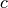
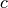

Target Radiance Image Generator (rytarggen)¶
Overview¶
This module provides a simple model for an optical target image radiance calculator, given the radiometric sensor characteristics and the target spatial temperature and emissivity distribution. The calculator accounts for
- the sensor spectral band
- target self-emission
- target reflected sunlight.
The model does not account for reflected ambient radiance.
HDF5 File¶
The Python implementation of the model uses an HDF5 file to capture the input and output data for record keeping or subsequent analysis. HDF5 files provide for hierarchical data structures and easy read/save to disk. See the file hdf5-as-data-format.md ([hdf5asdataformat]) in the pyradi root directory for more detail.
Input images are written to and read from HDF5 files as well. These files store the image as well as the images’ dimensional scaling in the focal plane. The intent is to later create test targets with specific spatial frequencies in these files.
Code Overview¶
For more detail see the documentation at
http://nelisw.github.io/pyradi-docs/_build/html/index.html,http://nelisw.github.io/pyradi-docs/_build/html/rytarggen.html, or pyradi/doc/rytarggen.rst Module functions¶
-
pyradi.rytarggen.create_HDF5_image(imageName, pixelPitch, numPixels, fn, kwargs, wavelength, saveNoNoiseImage=True, saveNoiseImage=True, saveEquivImage=True, equivalentSignalType=u'', equivalentSignalUnit=u'', EinUnits=u'')¶ This routine serves as calling function to a generating function to create images. Each generating function creates an image of a different type, taking as input radiant, photon rate, temperature or some other unit, as coded in the generating function.
This calling function sets up the image and writes common information and then calls the generating function of add the specific image type with radiometric units required. The calling function and its arguments must be given as arguments on this functions argument list.
The image file is in HDF5 format, containing the - input parameters to the image creation process - the image in photon rate units without photon niose - the image in photon rate units with photon noise - the image in some equivalent input unit radiant, photometric or photon rate units.
The general procedur in the generating function is to convert the irradiance input values in units [W/m2] to photon rate irradiance in units [q/m2.s)] by relating one photon’s energy to power at the stated wavelength by
 ,
where
,
where  is wavelength,
is wavelength,  is Planck’s constant and  is
the speed of light. The conversion is done at a single wavelength, which is not very accurate.
The better procedure is to create the photon rate image direction in the spectral domain as
a photon image.
is Planck’s constant and  is
the speed of light. The conversion is done at a single wavelength, which is not very accurate.
The better procedure is to create the photon rate image direction in the spectral domain as
a photon image.The following minimum HDF5 entries are required by pyradi.rystare:
'image/imageName'(string): the image name'image/PhotonRateIrradianceNoNoise'np.array[M,N]: a float array with the image pixel values no noise'image/PhotonRateIrradiance'np.array[M,N]: a float array with the image pixel values with noise'image/pixelPitch': ([float, float]): detector pitch in m [row,col]'image/imageSizePixels': ([int, int]): number of pixels [row,col]'image/imageFilename'(string): the image file name'image/wavelength'(float): where photon rate calcs are done um'image/imageSizeRows'(int): the number of image rows'image/imageSizeCols'(int): the number of image cols'image/imageSizeDiagonal'(float): the FPA diagonal size in mm'image/equivalentSignal'(float): the equivalent input signal, e.g. temperaure or lux (optional)'image/irradianceWatts'(float): the exitance in the image W/m2 (optional)'image/temperature'(float): the maximum target temperature in the image K (optional)A few minimum entries are required, but you can add any information you wish to the generaring function, by adding the additional information to the generating function’s kwargs.
- Args:
- imageName (string): the image name, used to form the filename.pixelPitch ([float, float]): detector pitch in m [row,col].numPixels ([int, int]): number of pixels [row,col].fn (Python function): the generating function to be used to calculate the image.kwargs (dictionary): kwargs to the passed to the generating function.wavelength (float): wavelength where photon rate calcs are done in [m]equivalentSignalType (str): type of the equivalent input scale (e.g., irradiance, temperature)equivalentSignalUnit (str): units of the equivalent input scale (e.g., W/m2, K)EinUnits (str): Ein units and definition separated with : (e.g., ‘W/m2 : on detector’, ‘q/(s.m2) : on detector’)saveNoNoiseImage (bool): save the noiseless image to HDF5 filesaveNoiseImage (bool): save the noisy image to HDF5 filesaveEquivImage (bool): save the equivalent image to HDF5 file
- Returns:
- nothing: as a side effect an image file is written
- Raises:
- No exception is raised.
Author: CJ Willers
-
pyradi.rytarggen.hdf_Raw(imghd5, filename, irrad_min=-1, irrad_dynrange=-1, imgNum=0)¶ A generating function to create a photon rate image from raw image. The raw image read in will be recaled to irrad_min + irrad_dynrange.
The raw image sequence must be of type np.float64 with no header or footer.
The function accepts radiant or photon rate minimum and dynamic range units. The equivalent image value is expressed as in the same units as the output image
This function must be called from rytarggen.create_HDF5_image
- Args:
- imghd5 (handle to hdf5 file): file to which image must be addedfilename (string): Raw file filename, data must be np.float64irrad_min (float): additive minimum value in the image, -1 to not use scalingirrad_dynrange (float): multiplicative scale factor (max value), -1 to not use scalingimgNum (int): image numbmer to be loaded from the image sequence
- Returns:
- nothing: as a side effect an image file is written
- Raises:
- No exception is raised.
Author: CJ Willers
-
pyradi.rytarggen.hdf_Uniform_photon(imghd5, irrad_min, irrad_dynrange)¶ A generating function to create a uniform photon rate image. The unoform value in the image will be irrad_min + irrad_dynrange.
The function accepts radiant or photon rate minimum and dynamic range units. The equivalent image value is expressed as in the same units as the input
This function must be called from rytarggen.create_HDF5_image
- Args:
- imghd5 (handle to hdf5 file): file to which image must be addedirrad_min (float): additive minimum value in the imageirrad_dynrange (float): multiplicative scale factor (max value)fracdiameter (float): diameter of the disk as fraction of minimum image sizefracblurr (float): blurr of the disk as fraction of minimum image size
- Returns:
- nothing: as a side effect an image file is written
- Raises:
- No exception is raised.
Author: CJ Willers
-
pyradi.rytarggen.hdf_disk_photon(imghd5, irrad_min, irrad_dynrange, fracdiameter, fracblurr)¶ A generating function to create an image with illuminated circle with blurred boundaries.
The function accepts radiant or photon rate minimum and dynamic range units. The equivalent image value is expressed as in the same units as the input
This function must be called from rytarggen.create_HDF5_image
- Args:
- imghd5 (handle to hdf5 file): file to which image must be addedirrad_min (float): additive minimum value in the imageirrad_dynrange (float): multiplicative scale factor (max value)fracdiameter (float): diameter of the disk as fraction of minimum image sizefracblurr (float): blurr of the disk as fraction of minimum image size
- Returns:
- nothing: as a side effect an image file is written
- Raises:
- No exception is raised.
Author: CJ Willers
-
pyradi.rytarggen.hdf_stairs_lux(imghd5, irrad_min, irrad_dynrange, steps, imtype)¶ A generating function to create a staircase image, with log/linear and precribed step count.
The increment along stairs can be linear or logarithmic.
The function accepts only radiant minimum and dynamic range units. The equivalent image value is expressed as in lux units
This function must be called from rytarggen.create_HDF5_image
- Args:
- imghd5 (handle to hdf5 file): file to which image must be addedirrad_min (float): additive minimum value in the imageirrad_dynrange (float): multiplicative scale factor (max value)steps (int): number of steps in the imageimtype (string): string to define the type of image to be created [‘stairslin’,’stairslog’]
- Returns:
- nothing: as a side effect an image file is written
- Raises:
- No exception is raised.
Author: CJ Willers
| [hdf5asdataformat] | hdf5-as-data-format.md. |